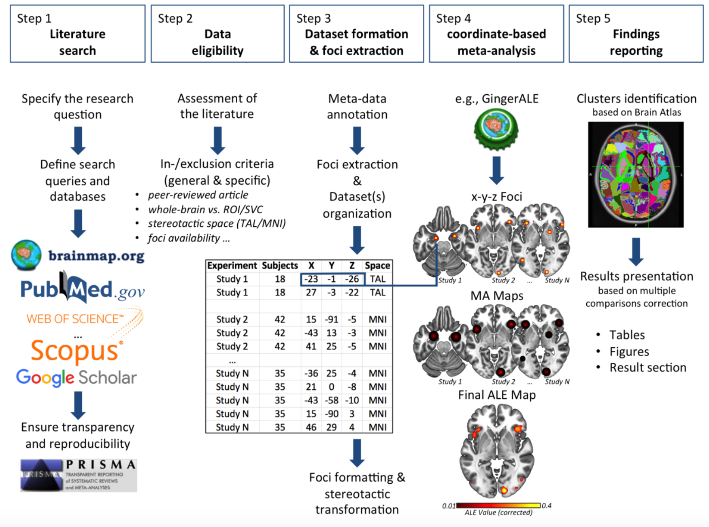

Conducting an ALE Meta-Analysis
1. Installation of GingerALE
Go to BrainMap to download the version of GingerALE for the operating system of the computer as a ZIP file.
Decompress the ZIP file. To avoid problems, decompress it within a local folder without blank spaces in its path.
Click the file GingerALE to execute the graphical interface of GingerALE.
2. Preparing Data for Meta-Analysis
Foci Formatting:
- Create a text file with three columns for x, y, and z coordinates, separated by tabs or spaces.
- Optionally, start the file with a line indicating the standard brain space (Talairach or MNI).
- Separate foci groups with a line break, including identifying information such as the first author’s name, year, experiment name, or subject group name.
- Include the number of subjects for each group and the coordinate data. Comments should start with "//".
3. Single Dataset Analysis
Loading Foci Data:
- Open GingerALE and load your foci data using File > Open Foci.
- GingerALE will read and verify the dataset, checking for mismatched reference spaces, missing subject sizes, and duplicated foci groups.
- Review any errors or warnings displayed.
Performing ALE Analysis:
- Once the data is loaded, choose threshold settings and begin the calculations.
- The ALE meta-analysis follows four main steps: ALE scores, null distribution, thresholding, and cluster statistics.
4. Contrast Analyses
Running Separate ALE Analyses:
- Perform separate ALE analyses on the two sets of foci.
- Create a combined text file with foci from both files and run a pooled analysis. Ensure experiments appearing in both sets are only reported once.
Subtraction Analysis:
- Select the “Contrast Studies” radio button in the main GingerALE window.
- Open the three thresholded ALE images using the file menu items.
- Verify settings for threshold method, number of permutations, and output file names, then click Compute.
5. Output Files
Types of Output Files:
- ALE Image: Contains unthresholded ALE values for every voxel in the brain.
- P Value Image: Contains unthresholded P values for each voxel.
- Thresholded Image: ALE map thresholded at a given value, used as input for contrast analyses.
- Cluster Image: Identifies contiguous non-zero regions in the thresholded image.
- Cluster Spreadsheet: Provides detailed information about the resultant clusters, including volume, coordinates, and anatomical labels.
- Data History: Contains parameters and output file names used in the analysis, along with additional information about different stages of the analysis.
6. Viewing Results
Using Mango for Visualization:
- Download and install Mango from Mango.
- Open the anatomical template file (Talairach or MNI) in Mango.
- Add the thresholded results image as an overlay.
- Update the image range to ensure all results are shown.
- Enable anatomical labels and coordinates display for better interpretation.
- Adjust the color map for better visualization of the results.
7. Additional Analysis Options
Connectivity Analyses:
Use meta-analytic connectivity modeling (MACM) to examine the functional connectivity of a specific brain region.
For more information: Robinson HBM 2010
For detailed instructions, refer to the full GingerALE user manual available in the BrainMap website: GingerALE Manual
VIDEO TUTORIAL: GingerALE Tutorial
Image. Workflow stages of the activation likelihood estimation (ALE) method